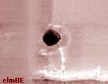

Oxide Breakdown
refers to the destruction of an
oxide layer (usually silicon
dioxide or SiO2)
in a semiconductor device. Oxide layers are used in many parts of
the device: as gate oxide between the metal and the semiconductor in MOS
transistors, as dielectric layer in capacitors, as inter-layer
dielectric to isolate conductors from each other, etc. Oxide
breakdown is also referred to as 'oxide rupture' or 'oxide punch-through.'
Oxide
breakdown has always been of serious reliability concern in the
semiconductor industry because of the continuous trek towards smaller
and smaller devices. As other features of the device are scaled down, so
must oxide thickness be reduced. Oxides become more vulnerable to
the voltages fed into the device as they get thinner. The thinnest
oxide layers today are already less than 50 angstroms thick. An
oxide layer can break down instantaneously at 8-11 MV per cm of
thickness, or 0.08 - 0.11 V per angstrom of thickness.
Oxide
breakdowns may be classified as one of the following: 1) EOS/ESD-induced
dielectric breakdown; 2) early-life dielectric breakdown; or 3)
time-dependent dielectric breakdown (TDDB).
Oxide rupture
due to EOS/ESD events generally involves a high voltage being applied
across the oxide layer, causing a 'weak' spot within it to exhibit
dielectric breakdown and allow current to flow. This current flow, which
is basically due to loss of dielectric isolation at that spot, causes
localized heating, which induces the flow of a larger current. A
vicious cycle of increasing current flow and localized heating ensues,
eventually causing a meltdown of the silicon, dielectric, and other
materials at the 'hot spot'. This meltdown creates a short circuit
between the layers supposedly isolated by the oxide.
See
also:
EOS/ESD
Failures.

Figure 1.
Photo of an ESD-induced Oxide Breakdown
Early-life
and time-dependent oxide breakdowns will result in the same
failure attributes,
but the former involves a breakdown that occurs early in the
life of the device (say, within the first 2 years of normal operation),
while the latter involves a breakdown that occurs after a much longer time of
use (mainly in the 'wear-out' stage). Both categories involve
destruction of the oxide while under
normal
bias or operation.
Early life and
time-dependent dielectric breakdowns are primarily due to the presence
of weak spots within the oxide layer arising from its poor
processing or uneven growth. These weak spots or dielectric defects may
be caused by: 1) the presence of mobile sodium (Na) ions in the oxide;
2) radiation damage; 3) contamination, wherein particles or impurities
are trapped on the silicon prior to oxidation; and 4)
crystalline defects
in the silicon such as stacking faults and dislocations.
The risk of dielectric
breakdown generally increases with the area of the oxide layer, since a
larger area means the presence of more defects and greater exposure to
contaminants. The worse cases of oxide defects are the ones that
result in early life dielectric breakdowns. It must be pointed
out, however, that even very high quality oxides can suffer breakdown
with time, especially in the 'wear-out' period of its lifetime. This
latter case is the classic 'TDDB' mechanism.
The SiO2
TDDB Process
Previous
studies have shown that SiO2 Time-Dependent
Dielectric Breakdown (TDDB) is a charge injection mechanism, the process of
which may be divided into 2 stages - the build-up stage and the runaway
stage.
During the
build-up stage,
charges invariably get trapped in various parts of the oxide as current
flows in the oxide. The trapped charges increase in number with time,
forming high electric fields (electric field = voltage/oxide thickness)
and high current regions along the way. This process of electric
field build-up continues until the runaway stage is reached.
During the
runaway stage,
the sum of the electric field built up by charge injection and the
electric fields applied to the device exceeds the dielectric breakdown
threshold in some of the weakest points of the dielectric. These points
start conducting large currents that further heat up the dielectric,
which further increases the current flow. This positive feedback
loop eventually results in electrical and thermal runaway, destroying
the oxide in the end. The runaway stage happens in a very short
period of time.
The presence
of defects in the dielectric greatly reduces the time needed to
transition from the build-up to the runaway stage. These defects
actually have the effect of 'thinning' down the oxide where they are
located, since they are occupying space that should have been occupied
by the dielectric. The effective electric field is higher in these
thinned-out areas compared to defect-free areas for any given voltage.
This is why it takes a lower voltage and shorter time to break down the
dielectric at its defect points.
There are
many lifetime equations used in the industry today to model the
reliability of an oxide layer. One of the simplest, however, can
be seen in
www.semicon.toshiba.co.jp. According to
this site, TDDB may be modelled by:
|
Tf =
Ae(-BV)
where:
Tf = the time to failure;
A = a
constant;
V
= the voltage applied
across the dielectric layer; and
B
=
a voltage acceleration constant that depends on the properties of the
oxide.
|
Numerous
studies have shown that oxide breakdown is accelerated not just by the
voltage applied across the oxide, but by elevated temperature as well.
Thus, the tendency of a lot to fail by oxide breakdown is usually assessed
by burn-in, which
subjects the samples to both electrical and thermal stresses.
See
Also:
Dielectric;
Die Failures; Failure Analysis;
Reliability Models
HOME
Copyright © 2001-2004
www.EESemi.com.
All Rights Reserved.